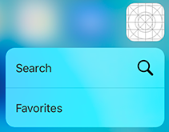

原文地址：http://iostuts.io/2015/10/08/how-to-add-quick-actions/
这篇教程介绍了Quick actions是如何工作的，如何创建Quick actions以及如何执行actions。此外，我们创建一个简单的app包含两个静态的Quick actions和一个动态的Quick actions。
我们首先开始静态Quick actions创建。他们都被定义在Info.plist文件的特定键－－UIApplicationShortcutItems中。每一个子项是一个字典且至少要包含以下键：
1. UIApplicationShortcutItemType ：作为UIApplicationShortcutItem的一部分发送给你的应用。可以依据不同的shortcut类型用于执行你的actions。
2. UIApplicationShortcutItemTitle：展示在你的quick action菜单中的action标题。如果标题一行无法显示并且你没有指定子标题那么它将显示两行。可以使用本地化(localised).
一些可选键：
1. UIApplicationShortcutItemSubtitle: 用户展示你的actions的子标题的字符串。它将显示在你的quick actions标题的下方。可以本地化。
2. UIApplicationShortcutItemIconType：定义内置图标类型的字符串，可选类型列表可以查询这里；
3. UIApplicationShortcutItemIconFile：一个指定Assets Catalog或者Bundle中的字符串。图像尺寸和设计的详细信息可以在这里找到如果指定了此键，则系统会忽略UIApplicationShortcutItemIconType
4. UIApplicationShortcutItemUserInfo：一个字典，包含你想要解析的其他信息。
等不及向你展示它是如何工作的了。
我们需要创建一个Single View应用(File -> New -> Project).
接着，打开Info.Plist文件并拷贝黏贴以下内容。
<key>UIApplicationShortcutItems</key>
<array>
<dict>
<key>UIApplicationShortcutItemIconType</key>
<string>UIApplicationShortcutIconTypeSearch</string>
<key>UIApplicationShortcutItemTitle</key>
<string>SHORTCUT_TITLE_SEARCH</string
<key>UIApplicationShortcutItemType</key
<string>$(PRODUCT_BUNDLE_IDENTIFIER).Search</string>
</dict>
<dict>
<key>UIApplicationShortcutItemTitle</key>
<string>SHORTCUT_TITLE_FAVORITES</string
<key>UIApplicationShortcutItemType</key
<string>$(PRODUCT_BUNDLE_IDENTIFIER).Favorites</string>
</dict>
</array>
如果你没有iPhone6s和6splus,那么可以用tweak在模拟器上测试。
Build你的项目并试着3D touch你的app图标，它将向你展示一个菜单，十分的简单且很好，难道不是吗？
你可能已经注意到了两个问题：
1. 标题折行了。
2. 当你点击actions，它只是启动了app，并没有做任何的操作。
让我们来完成余下的任务！
我们的下一个挑战是如何执行这些actions。我们要时刻记得这有两种不同情况。
1. app处于关闭状态，用户通过quick action shorcut来打开应用。application:didFinishLaunchingWithOptions:将会被调用。参数launchingOptions字典中键名UIApplicationLaunchOptionsShortcutItemKey对应的value是UIApplicationShortcutItem对象。
2. app之前被打开过，此时处于挂起状态，用户通过shortcut继续使用。这种情况下应用将被唤醒，执行：application:performActionForShortcutItem:completionHandler:方法。
首先，我们创建一个私有方法，用来执行shortcut items。
private func handleShortcutItem(shortcutItem: UIApplicationShortcutItem) {
if let rootViewController = window?.rootViewController {
rootViewController.dismissViewControllerAnimated(false, completion: nil)
let alertController = UIAlertController(title: "", message: shortcutItem.localizedTitle, preferredStyle: .Alert)
alertController.addAction(UIAlertAction(title: "OK", style: .Default, handler: nil))
rootViewController.presentViewController(alertController, animated: true, completion: nil)
}
}
接着，我们添加当app通过quick action返回前台的时候获取shortcut item的逻辑，黏贴以下代码到application:didFinishLaunchingWithOptions:中。请不要忘记检测你的iOS系统版本，如果你的应用支持iOS8，app将会crash。
if let shortcutItem = launchOptions?[UIApplicationLaunchOptionsShortcutItemKey] as? UIApplicationShortcutItem {
handleShortcutItem(shortcutItem)
}
最后是声明：application:performActionForShortcutItem:completionHandler:,该方法执行quick action，前提是app没有退出。将以下代码黏贴到AppDelegate中。
func application(application: UIApplication, performActionForShortcutItem shortcutItem: UIApplicationShortcutItem, completionHandler: (Bool) -> Void) {
handleShortcutItem(shortcutItem)
}
重新运行app并按压icon图标。你会发现当你使用quick action时，将会弹出alert并附带action 标题。
在实际应用中，你应该是希望不同的shortcut item执行不同的actions。前面已经述说了，UIApplicationShortcutItemType是用来标记actions类型的。让我们继续吧！
将以下代码黏贴到AppDelegate的声明中：
enum DGShortcutItemType: String {
case Search
case Favorites
init?(shortcutItem: UIApplicationShortcutItem) {
guard let last = shortcutItem.type.componentsSeparatedByString(".").last else { return nil }
self.init(rawValue: last)
}
var type: String {
return NSBundle.mainBundle().bundleIdentifier! + ".\(self.rawValue)"
}
}
我们这里做的十分简单。每一个shortcut item包含一个类型，在示例中是：
* $(PRODUCT_BUNDLE_IDENTIFIER).Favorites
* $(PRODUCT_BUNDLE_IDENTIFIER).Search
我们创建一个enumeration 用来解析这些值，可以使用比较简洁的写法：.Search 或者.Favorites
现在用以下代码替换我们刚刚声明的handleShortcutItem方法
private func handleShortcutItem(shortcutItem: UIApplicationShortcutItem) {
if let rootViewController = window?.rootViewController, let shortcutItemType = DGShortcutItemType(shortcutItem: shortcutItem) {
rootViewController.dismissViewControllerAnimated(false, completion: nil)
let alertController = UIAlertController(title: "", message: "", preferredStyle: .Alert)
switch shortcutItemType {
case .Search:
alertController.message = "It's time to search"
break
case .Favorites:
alertController.message = "Show me my favorites"
break
}
alertController.addAction(UIAlertAction(title: "OK", style: .Default, handler: nil))
rootViewController.presentViewController(alertController, animated: true, completion: nil)
}
}
我门已经做了以下事情：
1. 我么在if控制语句内添加了let shortcutItemType = DGShortcutItemType(shortcutItem: shortcutItem) 来确保这些值不是空的。如果我们添加一个新的shortcut则它可能为空，但是不会向enum添加新值。
2. 添加转换语句， 使每一个shortcut item类型能有不同的action
运行项目并测试。现在每一个shortcut应该可以展示不同的alert了。
Hm. 但是有一个地方肯定是错误的，我不希望是这样的：

这些shortcut 没有对应的图片，看起来不如Search shortcut那么美观。我想改进它。
下载这些文件（this file），并提取其中的图片放到Images.xcassets.
打开Info.plist源码，并在Favorites Item 中添加如下两行。
<key>UIApplicationShortcutItemIconFile</key>
<string>ShortcutIconFavorites</string>
所有UIApplicationShortcutItems项应该是这样的：
<key>UIApplicationShortcutItems</key>
<array>
<dict>
<key>UIApplicationShortcutItemIconType</key>
<string>UIApplicationShortcutIconTypeSearch</string>
<key>UIApplicationShortcutItemTitle</key>
<string>SHORTCUT_TITLE_SEARCH</string>
<key>UIApplicationShortcutItemType</key>
<string>$(PRODUCT_BUNDLE_IDENTIFIER).Search</string>
</dict>
<dict>
<key>UIApplicationShortcutItemTitle</key>
<string>SHORTCUT_TITLE_FAVORITES</string>
<key>UIApplicationShortcutItemType</key>
<string>$(PRODUCT_BUNDLE_IDENTIFIER).Favorites</string>
<key>UIApplicationShortcutItemIconFile</key>
<string>ShortcutIconFavorites</string>
</dict>
</array>
运行项目，现在当你3D touch 你的app icon时，你可以看到这样：
现在它看起来要好的多，我们已经学习了在quick action shortcuts中如何使用自定义assets。
现在让我们来试着做一个动态的shortcut，从iOS9开始，UIApplication类有一个public变量public var shortcutItems: [UIApplicationShortcutItem]?。
注册一个shortcuts 在home屏展示， 或者检索已经注册的shortcuts.
这正是我们要使用的。我们将创建一个接口来允许我们输入数据并更新/删除当前的shortcut。
打开viewcontroller.swift文件，并替换所有代码如下：
import UIKit
extension UIApplicationShortcutIconType {
var toString: String {
switch self {
case .Compose: return "Compose"
case .Play: return "Play"
case .Pause: return "Pause"
case .Add: return "Add"
case .Location: return "Location"
case .Search: return "Search"
case .Share: return "Share"
}
}
init?(string: String) {
switch string {
case "Compose": self.init(rawValue: UIApplicationShortcutIconType.Compose.rawValue)
case "Play": self.init(rawValue: UIApplicationShortcutIconType.Play.rawValue)
case "Pause": self.init(rawValue: UIApplicationShortcutIconType.Pause.rawValue)
case "Add": self.init(rawValue: UIApplicationShortcutIconType.Add.rawValue)
case "Location": self.init(rawValue: UIApplicationShortcutIconType.Location.rawValue)
case "Search": self.init(rawValue: UIApplicationShortcutIconType.Search.rawValue)
case "Share": self.init(rawValue: UIApplicationShortcutIconType.Share.rawValue)
default: return nil
}
}
static var allTypesToStrings: [String] {
return [UIApplicationShortcutIconType.Compose.toString, UIApplicationShortcutIconType.Play.toString, UIApplicationShortcutIconType.Pause.toString, UIApplicationShortcutIconType.Add.toString, UIApplicationShortcutIconType.Location.toString, UIApplicationShortcutIconType.Search.toString, UIApplicationShortcutIconType.Share.toString]
}
}
class ViewController: UIViewController {
// MARK: -
// MARK: Vars
private let titleTextField = UITextField()
private let subtitleTextField = UITextField()
private var iconTypeSegmentedControl = UISegmentedControl(items: UIApplicationShortcutIconType.allTypesToStrings)
private let updateButton = UIButton(type: .System)
// MARK: -
override func loadView() {
super.loadView()
titleTextField.placeholder = "Title"
titleTextField.delegate = self
view.addSubview(titleTextField)
subtitleTextField.placeholder = "Subtitle"
subtitleTextField.delegate = self
view.addSubview(subtitleTextField);
updateButton.setTitle("Update shortcut", forState: .Normal)
updateButton.addTarget(self, action: Selector("updateDynamicAction"), forControlEvents: .TouchUpInside)
view.addSubview(updateButton)
iconTypeSegmentedControl.selectedSegmentIndex = 0
view.addSubview(iconTypeSegmentedControl)
view.addGestureRecognizer(UITapGestureRecognizer(target: self, action: "viewTapped"))
}
// MARK: -
// MARK: Methods
func viewTapped() {
view.endEditing(true)
}
func updateDynamicAction() {
guard let title = titleTextField.text else {
UIApplication.sharedApplication().shortcutItems = nil
return
}
let type = NSBundle.mainBundle().bundleIdentifier! + ".Dynamic"
let shortcutIconType = UIApplicationShortcutIconType(string: iconTypeSegmentedControl.titleForSegmentAtIndex(iconTypeSegmentedControl.selectedSegmentIndex)!)!
let icon = UIApplicationShortcutIcon(type: shortcutIconType)
let dynamicShortcut = UIApplicationShortcutItem(type: type, localizedTitle: title, localizedSubtitle: subtitleTextField.text, icon: icon, userInfo: nil)
UIApplication.sharedApplication().shortcutItems = [dynamicShortcut]
}
// MARK: -
// MARK: Layout
override func viewWillLayoutSubviews() {
super.viewWillLayoutSubviews()
let width = view.bounds.width
let horizontalMargin: CGFloat = 20.0
let elementHeight: CGFloat = 40.0
let verticalSpacing: CGFloat = 20.0
titleTextField.frame = CGRect(x: horizontalMargin, y: 50.0, width: width - 2 * horizontalMargin, height: elementHeight)
subtitleTextField.frame = CGRectOffset(titleTextField.frame, 0.0, elementHeight + verticalSpacing)
iconTypeSegmentedControl.frame = CGRectOffset(subtitleTextField.frame, 0.0, elementHeight + verticalSpacing)
updateButton.frame = CGRectOffset(iconTypeSegmentedControl.frame, 0.0, elementHeight + verticalSpacing)
}
}
// MARK: -
// MARK: UITextField Delegate
extension ViewController: UITextFieldDelegate {
func textFieldShouldReturn(textField: UITextField) -> Bool {
if textField == titleTextField {
subtitleTextField.becomeFirstResponder()
} else if textField == subtitleTextField {
subtitleTextField.resignFirstResponder()
}
return true
}
}
这些代码看起来很多，但是它十分基础并且不需要解释。
运行项目，你会看到简单的界面：
点击：“Update shortcut” 添加一些数据。 试着3Dtouch你的app，你将看到如下情景：
有一个游戏，尝试改变值，按“更新的快捷方式”，它将改变。如果你离开了标题标签，并要求更新，那么该快捷方式将被删除。我们可以随时添加、删除、更改快捷方式。
还有一件事情没有做了，就是当我们通过Dynamic shortcut来打开app的时候没有做任何事情。现在我们要添加alets，来展示如何做到这一点。
以下时我们需要做的： 添加 case Dynamic 到 DGShortcutItemType enumeration 来支持这种类型。 在handleShortcutItem方法的switch语句中添加如下代码：
case .Dynamic:
alertController.message = "Dynamic shortcut works!"
break
在updateDynamicAction方法改变： NSBundle.mainBundle().bundleIdentifier! + ".Dynamic" 修改为DGShortcutItemType.Dynamic.type
运行项目并测试3D touch。 当你打开app， 它将展示每一个shortcuts指定的消息。
我想我们已经完成了Quick Actions 主要逻辑。本教程源码在这里（here）可以下载。
希望大家喜欢，并留下你们的观点和建议。再见！